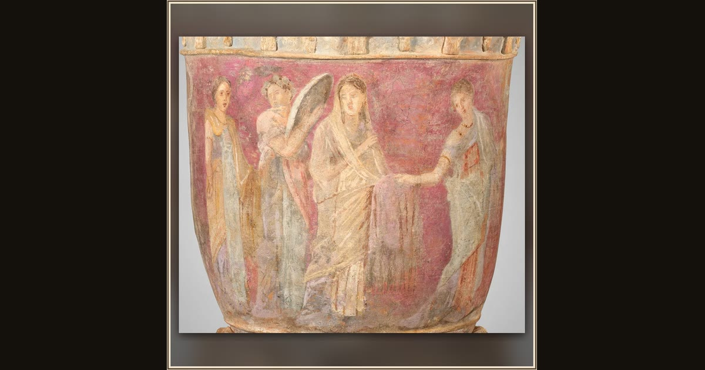

Terracotta vase
Greek, Sicilian, Centuripe · 3rd–2nd century BCE · met
A veiled woman stands among other women on this Greek terracotta vase from Centuripe, recalling Sappho's line about a rejoicing bride and bridegroom. (100) Explore its place in Sappho's Poems and Fragments, Fragments 55–101, section 46.